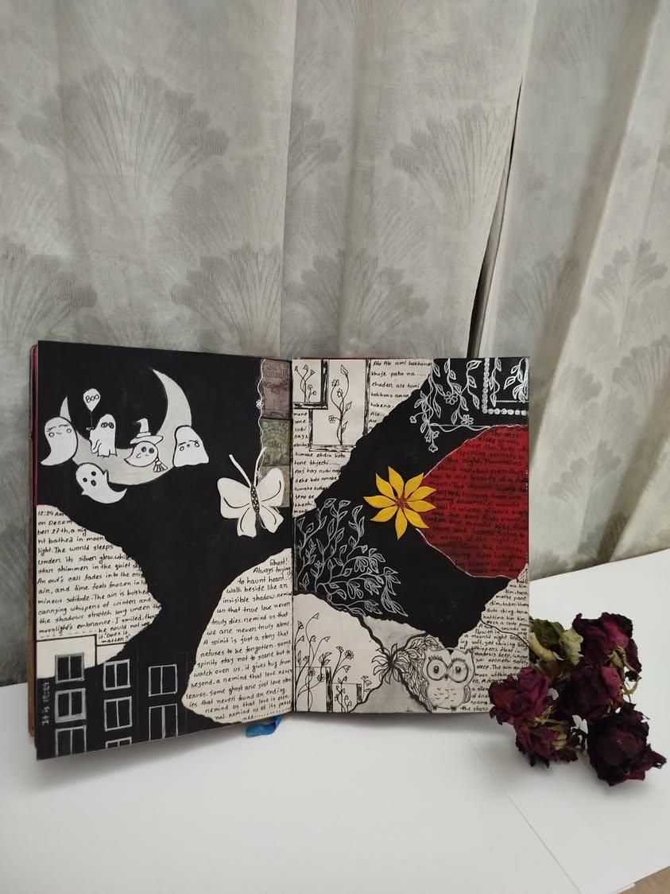

✦ a living night
Even now,
Even now,
but in silence.
Move your mouse — the scene breathes.
a journal of someone I love
always trying to haunt heart · always here, in silence

Every symbol on these pages means something only I understand. The ghosts are her. The moon, because we talked all night. The butterfly, because she gave me that feeling you cannot name. The sunflower — that is what I called her. The owl, for every late night we were both awake. The buildings on the left, because that is where she lived.
"Once upon a time, we used to talk a lot, laugh a lot, share our joys. Even now, but in silence."
somewhere between midnight and 3am
Dear Ghost,
I haven't forgotten. I won't.
The journal is full now. Every page has you in it somewhere — in the margins, in the midnight ink, in the butterfly I drew because you always gave me that feeling.
I still look at the moon and think of you. I still draw those little ghosts in my notebooks. I still call you sunflower, even if only inside my head.
We don't talk anymore. But somehow, I think you know.
— P
Move your mouse — the scene breathes.